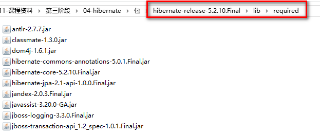
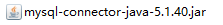
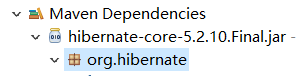

Hibernate基本应用
回顾
1. Maven的基础配置 2. Maven的继承 3. Maven包冲突的处理 4. Maven的私服搭建流程
任务
1. Hibernate基础术语和简介 2. Hibernate基本使用 3. Hibernate配置文件详解 4. Hibernate核心API 5. Hibernate的基础CRUD
目标
1. 掌握Hibernate基础术语和简介 2. 掌握Hibernate基本使用 3. 掌握Hibernate配置文件详解 4. 掌握Hibernate核心API 5. 掌握Hibernate的基础CRUD
一. Hibernate简介
1.1 Hibernate
官网地址: hibernate
资料地址:资料
使用版本: 5.2.12.Final
1.2 Hibernate介绍
1.2.1 Hibernate介绍
Hibernate是一个开放源代码的对象关系映射框架，它对JDBC进行了非常轻量级的对象封装，它将POJO与数据库表建立映射关系，是一个全自动的orm框架，hibernate可以自动生成SQL语句，自动执行，使得Java程序员可以随心所欲的使用对象编程思维来操纵数据库。
Hibernate可以应用在任何使用JDBC的场合，既可以在Java的客户端程序使用，也可以在Servlet/JSP的Web应用中使用，最具革命意义的是，Hibernate可以在应用EJB的J2EE架构中取代CMP，完成数据持久化的重任。
Hibernate实现了Java Persistence API规范。
1.2.2 何为orm?
对象-关系映射（OBJECT/RELATIONAL/MAPPING，简称ORM），是随着面向对象的软件开发方法发展而产生的。用来把对象模型表示的对象映射到基于S Q L 的关系模型数据库结构中去。这样，我们在具体的操作实体对象的时候，就不需要再去和复杂的 SQ L 语句打交道，只需简单的操作实体对象的属性和方法。O R M 技术是在对象和关系之间提供了一条桥梁，前台的对象型数据和数据库中的关系型的数据通过这个桥梁来相互转化.
Java实体类 ----> mapping file ----> 数据库
属性 -----> 字段
对象 -----> 一行数据
1.2.3 Java常见使用ORM模型的框架
| 框架名称 | 简介 |
|---|---|
| APACHE OJB | OJB是基于XML的对象/关系映射工具.OJB提供一些高级的特性如:对象缓存,延迟加载,利用事务隔离级别的结构进行分布式管理,支持悲观与乐观锁.OJB还提供了一个灵活的配置与插件机制以便可以扩展加入自己的功能. |
| CAYENNE | Apache的一款持久层框架!基于ORM模型! |
| JAXOR | Jaxor是一个简单但功能强大的创建到关系映像层对象的工具。它允许开发者轻松地在表中插入、更新、删除行，但也可被扩展为创建一个可扩展的映像层，这个层可创建一个完全的域模型，透明地映射到数据库表。 |
| JPA | JPA是Java Persistence API的简称，中文名Java持久层API，是JDK 5.0注解或XML描述对象－关系表的映射关系，并将运行期的实体对象持久化到数据库中 |
| MYBATIS | MyBatis 本是apache的一个开源项目iBatis, 2010年这个项目由apache software foundation 迁移到了google code，并且改名为MyBatis 。2013年11月迁移到Github。 |
| HIBERNATE | Hibernate是一个开放源代码的对象关系映射框架，它对JDBC进行了非常轻量级的对象封装，它将POJO与数据库表建立映射关系，是一个全自动的orm框架，hibernate可以自动生成SQL语句，自动执行，使得Java程序员可以随心所欲的使用对象编程思维来操纵数据库。 |
| IBATIS | iBATIS一词来源于“internet”和“abatis”的组合，是一个基于Java的持久层框架。iBATIS提供的持久层框架包括SQL Maps和Data Access Objects（sDAO） |
1.3 Hibernate作用
- Hibernate不仅负责从Java类映射到数据库表(从Java数据类型到SQL数据类型),而且还提供了数据查询和检索功能。
- 它可以显著减少开发时间,可以避免手动编写SQL语句,实现自动生成SQL语句,自动执行!
- Hibernate依然可以使用SQL对数据操作,保证你的技术和知识是有效的一如既往。
- 最为关键的一点,Hibernate是ORM模型框架,通过操作实体类(持久化类)进而操作数据库!这样Java程序员可以随心所欲的使用面向对象编程思想来操作纵数据库!
1.4 Hibernate对比JDBC和DBUtils
1.5 Hibernate体系结构

Hibernate作为一款ORM(关系型数据操作)方案,数据访问者可以通过Hibernate对程序的数据库数据进行有效的操作,我们可以利用Hibernate API 对数据进行插入,删除,查询等操作.
在这里,我们简单介绍下Hibernate API类图:

SessionFactory:
SessionFactory接口负责初始化Hibernate。它是线程安全的,它充当数据存储源的代理，并负责创建Session对象。这里用到了工程模式。需要注意的是SessionFactory并不是轻量级的，因为一般情况下，一个项目通常只需要一个SessionFactory就够，当需要操作多个数据库时，可以为每个数据库指定一个SessionFactory。
Session:
Session接口负责执行被持久化对象的CRUD操作(CRUD的任务是完成与数据库的交流，包含了很多常见的SQL语句)。但需要注意的是Session是非线程安全的。同时，Hibernate的Session不同于JSP应用中的HttpSession。这里当使用session这个术语时，其实指的是Hibernate中的session，而以后会将HttpSession对象称为用户session。
Transaction:
Transaction 接口是一个可选的API，可以选择不使用这个接口，取而代之的是Hibernate 的设计者自己写的底层事务处理代码。 Transaction 接口是对实际事务实现的一个抽象，这些实现包括JDBC的事务、JTA 中的UserTransaction、甚至可以是CORBA 事务。之所以这样设计是能让开发者能够使用一个统一事务的操作界面，使得自己的项目可以在不同的环境和容器之间方便地移植。
EntityManager:
JPA规范操作数据库对象,后面会进行讲解!
二. Hibernate初体验
2.1 案例分析
案例: 模拟商城的客户注册
2.2 入门步骤
1.创建数据库
数据库名: hibernate_1
建库语句: CREATE DATABASE hibernate_1;
注意：数据库名不要加 中划线 “-”，否则设置<propertyname="hibernate.hbm2ddl.auto">update</property>
时无法执行修改表字段的sql语句（mysql版本5.5）
2. 创建客户表
表名:customer
建表语句:
xxxxxxxxxxCREATE TABLE customer( c_id bigint(20) PRIMARY KEY AUTO_INCREMENT, c_name varchar(20) NOT NULL, c_gender varchar(2) DEFAULT NULL, c_age int(11) DEFAULT NULL, c_level varchar(20) DEFAULT NULL)3.创建项目
项目名: hibernate-01-base
4.引入jar包
需要引入的 jar 包可以在，Hibernate下载目录下的 lib/requied 文件中找到

再引入JDBC驱动包

如果Maven项目,再pom添加如下:
xxxxxxxxxx <!-- hibernate --> <dependency> <groupId>org.hibernate</groupId> <artifactId>hibernate-core</artifactId> <version>5.2.10.Final</version> </dependency> <!-- mysql --> <dependency> <groupId>mysql</groupId> <artifactId>mysql-connector-java</artifactId> <version>5.1.40</version> </dependency>5.创建实体类
xxxxxxxxxxpackage com.qfedu.hibernate.pojo;/** * 客户实体类 */public class Customer{ private Long id; private String name; private String gender; private Integer age; private String level; //构造方法、setters、getters、toString} 注意: 这里应该关注映射类型 ,所谓的映射类型就是 Hibernate类型,Java类型和SQL数据类型的一个对应关系,例如:通过SQL语句字段类型,创建对应的实体类属性类型,下面列出基本类型对应表.
| Hibernate type (org.hibernate.type package) | JDBC type | Java type | BasicTypeRegistry key(s) |
|---|---|---|---|
| StringType | VARCHAR | java.lang.String | string, java.lang.String |
| MaterializedClob | CLOB | java.lang.String | materialized_clob |
| TextType | LONGVARCHAR | java.lang.String | text |
| CharacterType | CHAR | char, java.lang.Character | char, java.lang.Character |
| BooleanType | BIT | boolean, java.lang.Boolean | boolean, java.lang.Boolean |
| NumericBooleanType | INTEGER, 0 is false, 1 is true | boolean, java.lang.Boolean | numeric_boolean |
| YesNoType | CHAR, 'N'/'n' is false, 'Y'/'y' is true. The uppercase value is written to the database. | boolean, java.lang.Boolean | yes_no |
| TrueFalseType | CHAR, 'F'/'f' is false, 'T'/'t' is true. The uppercase value is written to the database. | boolean, java.lang.Boolean | true_false |
| ByteType | TINYINT | byte, java.lang.Byte | byte, java.lang.Byte |
| ShortType | SMALLINT | short, java.lang.Short | short, java.lang.Short |
| IntegerTypes | INTEGER | int, java.lang.Integer | int, java.lang.Integer |
| LongType | BIGINT | long, java.lang.Long | long, java.lang.Long |
| FloatType | FLOAT | float, java.lang.Float | float, java.lang.Float |
| DoubleType | DOUBLE | double, java.lang.Double | double, java.lang.Double |
| BigIntegerType | NUMERIC | java.math.BigInteger | big_integer, java.math.BigInteger |
| BigDecimalType | NUMERIC | java.math.BigDecimal | big_decimal, java.math.bigDecimal |
| TimestampType | TIMESTAMP | java.sql.Timestamp | timestamp, java.sql.Timestamp |
| TimeType | TIME | java.sql.Time | time, java.sql.Time |
| DateType | DATE | java.sql.Date | date, java.sql.Date |
| CalendarType | TIMESTAMP | java.util.Calendar | calendar, java.util.Calendar |
| CalendarDateType | DATE | java.util.Calendar | calendar_date |
| CalendarTimeType | TIME | java.util.Calendar | calendar_time |
| CurrencyType | java.util.Currency | VARCHAR | currency, java.util.Currency |
| LocaleType | VARCHAR | java.util.Locale | locale, java.utility.locale |
| TimeZoneType | VARCHAR, using the TimeZone ID | java.util.TimeZone | timezone, java.util.TimeZone |
| UrlType | VARCHAR | java.net.URL | url, java.net.URL |
| ClassType | VARCHAR (class FQN) | java.lang.Class | class, java.lang.Class |
| BlobType | BLOB | java.sql.Blob | blob, java.sql.Blob |
| ClobType | CLOB | java.sql.Clob | clob, java.sql.Clob |
| BinaryType | VARBINARY | byte[] | binary, byte[] |
| MaterializedBlobType | BLOB | byte[] | materialized_blob |
| ImageType | LONGVARBINARY | byte[] | image |
| WrapperBinaryType | VARBINARY | java.lang.Byte[] | wrapper-binary, Byte[], java.lang.Byte[] |
| CharArrayType | VARCHAR | char[] | characters, char[] |
| CharacterArrayType | VARCHAR | java.lang.Character[] | wrapper-characters, Character[], java.lang.Character[] |
| UUIDBinaryType | BINARY | java.util.UUID | uuid-binary, java.util.UUID |
| UUIDCharType | CHAR, can also read VARCHAR | java.util.UUID | uuid-char |
| PostgresUUIDType | PostgreSQL UUID, through Types#OTHER, which complies to the PostgreSQL JDBC driver definition | java.util.UUID | pg-uuid |
| SerializableType | VARBINARY | implementors of java.lang.Serializable | java.io.Serializable, and registered under the specific java.io.Serializable implementation class names. |
| StringNVarcharType | NVARCHAR | java.lang.String | nstring |
| NTextType | LONGNVARCHAR | java.lang.String | ntext |
| NClobType | NCLOB | java.sql.NClob | nclob, java.sql.NClob |
| MaterializedNClobType | NCLOB | java.lang.String | materialized_nclob |
| PrimitiveCharacterArrayNClobType | NCHAR | char[] | N/A |
| CharacterNCharType | NCHAR | java.lang.Character | ncharacter |
| CharacterArrayNClobType | NCLOB | java.lang.Character[] | N/A |
Java 8 BasicTypes:
| Hibernate type (org.hibernate.type package) | JDBC type | Java type | BasicTypeRegistry key(s) |
|---|---|---|---|
| DurationType | BIGINT | java.time.Duration | Duration, java.time.Duration |
| InstantType | TIMESTAMP | java.time.Instant | Instant, java.time.Instant |
| LocalDateTimeType | TIMESTAMP | java.time.LocalDateTime | LocalDateTime, java.time.LocalDateTime |
| LocalDateType | DATE | java.time.LocalDate | LocalDate, java.time.LocalDate |
| LocalTimeType | TIME | java.time.LocalTime | LocalTime, java.time.LocalTime |
| OffsetDateTimeType | TIMESTAMP | java.time.OffsetDateTime | OffsetDateTime, java.time.OffsetDateTime |
| OffsetTimeType | TIME | java.time.OffsetTime | OffsetTime, java.time.OffsetTime |
| ZonedDateTimeType | TIMESTAMP | java.time.ZonedDateTime | ZonedDateTime, java.time.ZonedDateTime |
6. 实体类配置映射文件
映射文件编写规则:
文件命名: 实体类名.hbm.xml
文件位置:与实体类存在在同一目录下
创建 Customer.hbm.xml
导入约束
打开项目依赖包目录查找如下包;
找到此包内
hibernate-mapping-3.0.dtd,复制如下内容至Customer.hbm.xml文件头xxxxxxxxxx
继续编写Customer.hbm.xml内容
xxxxxxxxxx<hibernate-mapping><!--name:类名table:表名--><class name="com.qfedu.hibernate.pojo.Customer" table="customer"><!-- 主键 --><id name="id" column="c_id"><generator class="native"></generator></id><!-- 其他属性 --><property name="name" column="c_name"></property><property name="gender" column="c_gender"></property><property name="age" column="c_age"></property><property name="level" column="c_level"></property></class></hibernate-mapping>
7.编写核心配置文件
核心配置文件编写规则:
文件命名:hibernate.cfg.xml
文件位置: 项目src目录下
maven项目resources下
创建 hibernate.cfg.xml文件
导入约束
打开项目依赖包目录查找如下包;
找到此包内
hibernate-configuration-3.0.dtd,复制如下内容至hibernate.cfg.xml文件头xxxxxxxxxx
继续编写hibernate.cfg.xml文件 (可以在hibernate下载包的
project\etc\hibernate.properties中查找配置属性参考)xxxxxxxxxx
<!-- 1、连接数据库参数 --> <property name="hibernate.connection.driver_class">com.mysql.jdbc.Driver</property> <property name="hibernate.connection.url">jdbc:mysql://localhost:3306/hibernate_1</property> <property name="hibernate.connection.username">root</property> <property name="hibernate.connection.password">111</property> <!-- 2、hibernate方言 --> <property name="hibernate.dialect">org.hibernate.dialect.MySQL5InnoDBDialect</property> <!-- 3、hibernate扩展参数 --> <property name="hibernate.show_sql">true</property> <property name="hibernate.format_sql">true</property> <property name="hibernate.hbm2ddl.auto">update</property> <!-- 4、*.hbm.xml文件 --> <mapping resource="com/qfedu/hibernate/pojo/Customer.hbm.xml"/>
8.Java代码测试
进行客户数据保存操作
Java代码如下:
xxxxxxxxxxpackage com.qfedu.hibernate.test;import org.junit.Test;import org.hibernate.Session;import org.hibernate.SessionFactory;import org.hibernate.Transaction;import org.hibernate.cfg.Configuration;import com.qfedu.hibernate.pojo.Customer;public class HibernateTest { public void testSave(){ Customer customer = new Customer(); customer.setName("老王"); customer.setAge(40); customer.setGender("男"); customer.setLevel("VIP"); //1.读取hibernate.cfg.xml文件 Configuration cfg = new Configuration(); cfg.configure(); //2.创建SessionFactory工厂 SessionFactory sessionFactory = cfg.buildSessionFactory(); //3.创建Session对象 Session session = sessionFactory.openSession(); //4.开启事务 Transaction tx = session.beginTransaction(); //5.执行添加操作 session.save(customer); System.out.println(customer.getId());//自动注入新生成的id //6.提交事务 tx.commit(); //7.关闭资源 session.close(); sessionFactory.close(); }}三.配置文件讲解
讲解如何编写实体类映射文件和核心配置文件!
1. hibernate-mapping文件讲解
1.1 hibernate-mapping标签：根标签
package 属性： 类所在的包
可以在 package 属性中配置实体类的包名， 这样 class 的 name 属性只配置类名就可以了。
xxxxxxxxxx<hibernate-mapping package="com.qfedu.hibernate.pojo"> <class name="Customer" table="t_customer">1.2 class标签
class 标签： 代表映射一个类
name 属性：类的限定名（包名+类名） 如果有了 package 属性，那么 name 只写类名即可
table 属性：数据库中的表名称
1.3 id标签
id 标签： 代表映射一个表的主键字段，Hibernate 中必须有主键
name 属性： 类的属性名称，属性名称指定是实体类里面的 getter 和 setter方法的名称，而不是私有成员名称。
column 属性： 表的字段名称
1.4 generator标签
generator 标签： 代表主键策略，下一节详细讲解。
1.5 property标签
property 标签： 代表类映射到表的普通字段
name 属性： 类的属性名称，属性名称指定是实体类里面的 getter 和 setter方法的名称，而不是私有成员名称。
column 属性： 表的字段名称
注意: 可以不添加column属性,那么认为表的字段名和实体类的变量名相同
1.6 其他节点属性
type（可选）：填写列的类型，Hibernate 会自动检测实体的属性类型。
每个类型有三种填法：java类型 | Hibernate 类型 | 数据库类型：具体参考基本类型(2.2-5)!
not-null（可选）：配置该属性（列）是否不能为空，默认值 false
length（可选）：配置数据库中列的长度。主要用户根据实体类自动创建表时使用, 注意:如果是整数类型,指明长度无效.
列设置举例：
xxxxxxxxxx <property name="name" column="c_name" length="20" not-null="true"></property> <property name="gender" column="c_gender" length="1" type="char"></property> <property name="age" column="c_age"></property> <property name="level" column="c_level" length="20"></property>如果列属性设置为 type="char" ， 那么实体类中的 gender 应该设置成 Character 类型：
xxxxxxxxxxprivate Character gender;2. hibernate.cfg.xml配置
hibernate.cfg.xml是 Hibernate 的核心配置文件。
1.1、数据库连接参数(必填)
hibernate.connection.driver_class
hibernate.connection.url
hibernate.connection.username
hibernate.connection.password
xml示例:
xxxxxxxxxx<hibernate-configuration> <!-- 连接数据库的参数 --> <session-factory> <!-- 1、连接数据库参数 --> <property name="hibernate.connection.driver_class">com.mysql.jdbc.Driver</property> <property name="hibernate.connection.url">jdbc:mysql://localhost:3306/hibernate_1</property> <property name="hibernate.connection.username">root</property> <property name="hibernate.connection.password">111</property>1.2 方言
org.hibernate.dialect.MySQLDialect 5.0版本使用（mysql版本5.5）
org.hibernate.dialect.MySQL5InnoDBDialect 5.2版本使用，否则无法自动建表，或有时自动建表是
engine=MyISAM（mysql版本5.5）
使用mysql5.7的同学注意，如果出现问题，可以使用如下方言：

1.3 扩展参数
扩展参数是可选配置。
hibernate.show_sql : 是否输出 Hibernate 生成的 sql 语句
hibernate.format_sql： 是否格式化 Hibernate 生成的 sql 语句
hibernate.hbm2ddl.auto ： 是否需要 Hibernate 维护表结构
update：Hibernate 会维护表结构。没有表的时候创建表，有表的时候不创建，字段有更新会增加新字段，不删除原有字段。（推荐使用）create：每次 Hibernate 都会删除原来的表，生成新的表结构。（开发环境中测试使用）create-drop：自动建表，每次框架运行结束都会将所有表删除。（开发环境中测试使用）validate：校验。不自动生成表，每次启动会校验数据库中表和实体配置是否一致，如果校验失败，则抛出异常。
1.4 映射实体类映射文件
填写src下的路径，例如：
xxxxxxxxxx<mapping resource="com/qfedu/hibernate/pojo/Customer.hbm.xml"/>四.Hibernate核心API讲解
主要讲解Hibernate涉及的核心类和核心接口!
1. Configuration
Configuration 类的作用是对 Hibernate 进行配置，以及对它进行启动。在 Hibernate 的启动过程中，Configuration 类的实例首先定位映射文档的位置，读取这些配置，然后创建一个SessionFactory对象。虽然Configuration 类在整个Hibernate 项目中只扮演着一个很小的角色，但它是启动 Hibernate 时所遇到的第一个对象。
指定配置文件的名字：例如将文件放入源码路径的 config 文件夹下
xxxxxxxxxxConfiguration cfg = new Configuration();cfg.configure(); //hibernate.cfg.xml放置在默认位置 src文件夹下cfg.configure("/config/hibernate.cfg.xml"); //如果放下src/config 下需要指定注意事项：Configuration 对象应该只创建一个，Configuration 对象是单例的。
2. SessionFactory
SessionFactory接口负责初始化Hibernate。它充当数据存储源的代理，并负责创建Session对象。这里用到了工厂模式。需要注意的是SessionFactory并不是轻量级的，因为一般情况下，一个项目通常只需要一个SessionFactory就够，当需要操作多个数据库时，可以为每个数据库指定一个SessionFactory。
注意事项：通常一个项目只需要创建一个 SessionFactory，当需要操作多个数据库时，可以为每个数据库指定一个SessionFactory
xxxxxxxxxx //通过Configuration对象构造sessionFactory对象SessionFactory factory = cfg.buildSessionFactory();3. Session
Session接口负责执行被持久化对象的CRUD操作(CRUD的任务是完成与数据库的交流，包含了很多常见的SQL语句)。但需要注意的是Session对象是非线程安全的。同时，Hibernate的session不同于JSP应用中的HttpSession。这里当使用session这个术语时，其实指的是Hibernate中的session，而以后会将HttpSession对象称为用户session。
注意事项：Session 是线程不安全的对象，在项目中需要创建多个 Session 对象，一个线程就创建一个 Session 对象。
初步了解以下方法:
void | update(Object object)Update the persistent instance with the identifier of the given detached instance. |
|---|---|
Serializable | save(Object object)Persist the given transient instance, first assigning a generated identifier. |
|---|---|
void | saveOrUpdate(Object object)Either save(Object) or update(Object) the given instance, depending upon resolution of the unsaved-value checks (see the manual for discussion of unsaved-value checking). |
|---|---|
<T> T | get(Class<T> entityType, Serializable id)Return the persistent instance of the given entity class with the given identifier, or null if there is no such persistent instance. |
|---|---|
void | delete(Object object)Remove a persistent instance from the datastore. |
|---|---|
4. Transaction
Transaction 接口的作用是用于执行事务操作。
Transaction 接口是一个可选的API，可以选择不使用这个接口，取而代之的是Hibernate 的设计者自己写的底层事务处理代码。 Transaction 接口是对实际事务实现的一个抽象，这些实现包括JDBC的事务、JTA 中的UserTransaction、甚至可以是CORBA 事务。之所以这样设计是能让开发者能够使用一个统一事务的操作界面，使得自己的项目可以在不同的环境和容器之间方便地移植。
Transaction 的方法：
xxxxxxxxxx//开启事务Transaction tx = session.beginTransaction();//提交事务tx.commit();//回滚事务tx.rollback();5. Query
Query接口让你方便地对数据库及持久对象进行查询，它可以有两种表达方式：HQL语言或本地数据库的SQL语句。Query经常被用来绑定查询参数、限制查询记录数量，并最终执行查询操作。
后面的章节中会具体讲到这个接口。
6. Criteria
QBC 查询 - Query By Criteria
Criteria接口与Query接口非常类似，允许创建并执行面向对象的标准化查询。值得注意的是Criteria接口也是轻量级的，它不能在Session之外使用。
后面的章节中会具体讲到这个接口。
7. Hibernate工具类编写
工具类编写原则: Configuration进行一次配置,并且幻化获取Session的步骤
java代码:
package com.qfedu.hibernate.utils;
import org.hibernate.Session;
import org.hibernate.SessionFactory;
import org.hibernate.cfg.Configuration;
/**
* Hibernate开发的工具类
*/
public class HibernateUtil {
private static SessionFactory sessionFactory = null;
//只需要执行1次
static{
Configuration cfg = new Configuration().configure();
sessionFactory = cfg.buildSessionFactory();
}
//获得session => 获得全新session
public static Session openSession(){
Session session = sessionFactory.openSession();
return session;
}
}五. CRUD练习
Session常用方法:
- save(Object obj)：保存对象
- update(Object obj)：更新对象
- saveOrUpdate(Object obj)：添加或修改对象
- delete(Object obj)：删除对象
- get(Class clz,Serialize id)：获取对象
- load(Class clz,Serialize id)：获取对象
xxxxxxxxxxpackage com.qfedu.hibernate.test;import org.hibernate.Session;import org.hibernate.Transaction;import org.junit.Test;import com.qfedu.hibernate.pojo.Customer;import com.qfedu.hibernate.utils.HibernateUtil;/** * 演示Session接口进行CRUD */public class CRUDTest { /** * save(Object obj) : 保存对象 */ public void testSave(){ Customer customer = new Customer(); customer.setName("老王1"); customer.setAge(40); customer.setGender('男'); customer.setLevel("VIP"); Session session = HibernateUtil.openSession(); Transaction tx = session.beginTransaction(); session.save(customer); tx.commit(); session.close(); } /** * update(Object obj)： 更新对象 */ public void testUpdate(){ Customer customer = new Customer(); //给Customer的id赋值，才可以更新 customer.setId(1L); customer.setName("老王2"); customer.setAge(45); customer.setGender('男'); customer.setLevel("VIP"); Session session = HibernateUtil.openSession(); Transaction tx = session.beginTransaction(); session.update(customer); tx.commit(); session.close(); } /** * saveOrUpdate(Object obj): 添加或修改对象 */ public void testSaveOrUpdate(){ Customer customer = new Customer(); //给Customer的id赋值，才可以更新 customer.setId(1L);//如果没有id则添加，有则更新 customer.setName("老王3"); customer.setAge(46); customer.setGender('女'); customer.setLevel("VIP"); Session session = HibernateUtil.openSession(); Transaction tx = session.beginTransaction(); session.saveOrUpdate(customer); tx.commit(); session.close(); } /** * delete(Object obj): 删除对象 * 注意：这个测试需要将前面映射配置中name的 not-null="true"删除 */ public void testDelete(){ Session session = HibernateUtil.openSession(); Transaction tx = session.beginTransaction(); Customer customer = new Customer(); customer.setId(2L); session.delete(customer); tx.commit(); session.close(); } /** * get(Class clz,Serialize id): 获取对象 * load(Class clz,Serialize id): 获取对象 */ public void testGetAndLoad(){ Session session = HibernateUtil.openSession(); Transaction tx = session.beginTransaction(); Customer customer = session.get(Customer.class, 1L); //Customer customer = session.load(Customer.class, 1L); System.out.println(customer); tx.commit(); session.close(); }}课前默写
1. 使用Maven继承新建多模块项目，并配置好依赖关系
作业
1. 使用Hibernate完成员工表的基础配置 2. 使用单元测试的方式完成基础的CRUD操作
xxxxxxxxxxCREATE TABLE `employee` ( `empId` int(11) NOT NULL AUTO_INCREMENT, `empName` varchar(20) NOT NULL, `empAge` int(11) NOT NULL, `empSex` char(1) NOT NULL DEFAULT '0', `empTel` varchar(20) DEFAULT NULL PRIMARY KEY (`empId`)) ENGINE=InnoDB AUTO_INCREMENT=6 DEFAULT CHARSET=utf8;-- ------------------------------ Records of employee-- ----------------------------INSERT INTO `employee` VALUES ('1', '张三', '20', '0', '110');INSERT INTO `employee` VALUES ('2', '李四', '20', '0', '111');INSERT INTO `employee` VALUES ('3', '王五', '20', '0', '112');INSERT INTO `employee` VALUES ('4', '赵六', '20', '0', '113');INSERT INTO `employee` VALUES ('5', '周七', '20', '0', '114');面试题
1. 简述ThreadLocal类的作用 2. 简述对ORM的理解 3. 简述Hibernate配置文件的具体配置的作用 4. 简述Hibernate的使用步骤